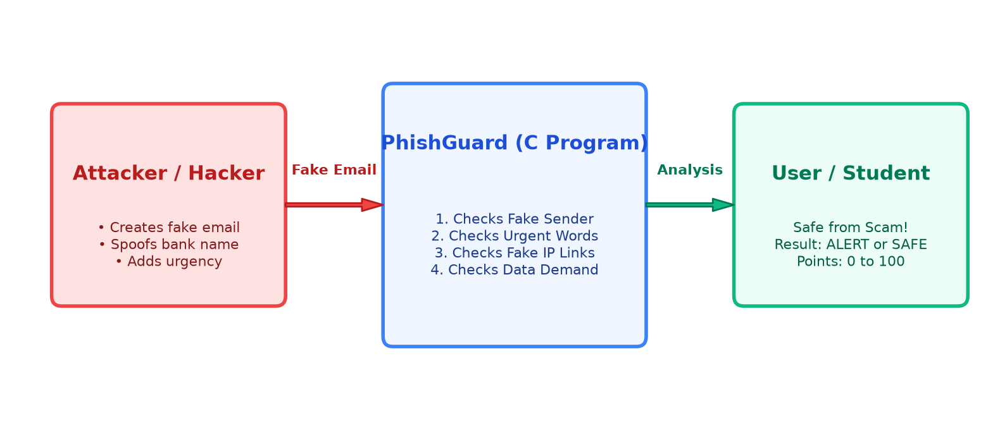
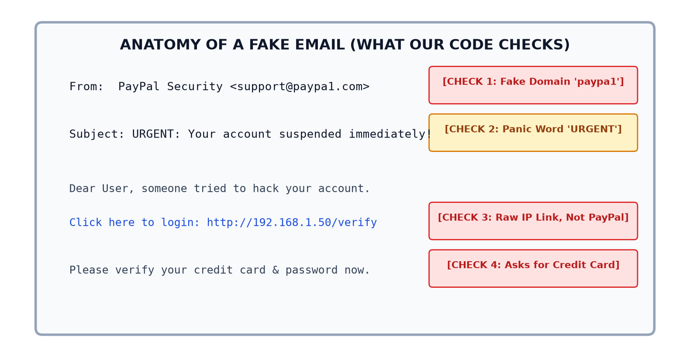
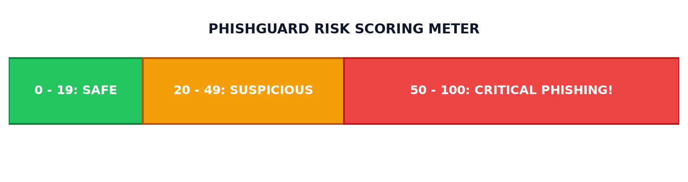

Build a lightweight, offline desktop scanner in pure C to detect fake phishing emails without requiring heavy cloud AI models or external Python libraries.
Attackers deceive students and non-technical users using lookalike domains (paypa1), artificial urgency (account suspended), and raw IP links (192.168.x.x).
An automated scanner that calculates an accurate Risk Score (0–100), outputs immediate verdicts (SAFE or CRITICAL), and guides users with prevention advice.

Figure 1: High-level attack and defense workflow.
Cyber adversaries exploit human psychology rather than software bugs.
They create fake emails that visually mimic real banks, universities, or services to manipulate users into surrendering passwords and credit cards.
paypa1.com.

1. Lookalike Sender (+35 pts): Flags deceptive spellings like paypa1.com.
2. Panic Subject (+25 pts): Flags urgency words like "URGENT" or "Suspended".
3. Raw IP Link (+25 pts): Real companies don't use raw IPs (192.168.1.50).
4. Credential Demand (+30 pts): Asking for passwords, OTPs, or credit cards.
Verdict: Total score $\ge 50$ triggers [CRITICAL PHISHING ALERT]!
Fette et al. (2007) - "Learning to Detect Phishing Emails" (PILFER), IEEE / ACM WWW.
fgets(), strstr(), tolower().// simple_phishguard.c (Student C Code)
#include <stdio.h>
#include <string.h>
int main() {
char sender[100], subject[150], body[500];
int score = 0;
// CHECK 1: Fake Sender (paypa1, .xyz)
if (strstr(sender, "paypa1")) score += 35;
// CHECK 2: Panic Subject (urgent, suspended)
if (strstr(subject, "urgent")) score += 25;
// CHECK 3: Raw IP Link (http://192.)
if (strstr(body, "http://192.")) score += 25;
// CHECK 4: Credential Demand (password, card)
if (strstr(body, "password")) score += 30;
if (score >= 50) printf("CRITICAL PHISHING!");
else printf("SAFE EMAIL");
return 0;
}[1] BASE PAPER: I. Fette, N. Sadeh, and A. Tomasic, "Learning to Detect Phishing Emails," in Proc. 16th Int. Conf. on World Wide Web (WWW '07), pp. 649–656, 2007.
[2] S. Marchal, J. Francois, R. State, and T. Engel, "Know Your Phish: Novel Content-Based Phishing Detection of Crafty Phishing Webpages," IEEE Trans. Computers, vol. 65, no. 8, pp. 2401–2414, 2016.
[3] A. Almomani, B. B. Gupta, S. Atawneh, A. Meulenberg, and E. Almomani, "A Survey of Phishing Email Filtering Techniques," IEEE Comm. Surveys & Tutorials, vol. 15, no. 4, pp. 2070–2090, 2013.
[4] R. Basnet, S. Mukkamala, and A. H. Sung, "Detection of Phishing Attacks: A Machine Learning Approach," in Studies in Fuzziness and Soft Computing, Springer, pp. 373–383, 2012.
[5] S. Sheng, B. Wardman, G. Warner, et al., "An Empirical Analysis of Phishing Blacklists," in Proc. 6th Conf. on Email and Anti-Spam (CEAS '09), 2009.
[6] E. Bergholz, J. Chang-Paauwe, et al., "Improved Phishing Detection using Model-Based Features and Classifiers," Cyberpsychology & Behavior, vol. 13, no. 2, pp. 135–142, 2010.
[7] ISO/IEC 9899:1999 (C99 Standard Specification), ANSI C Standard Library (stdio.h, string.h, ctype.h).